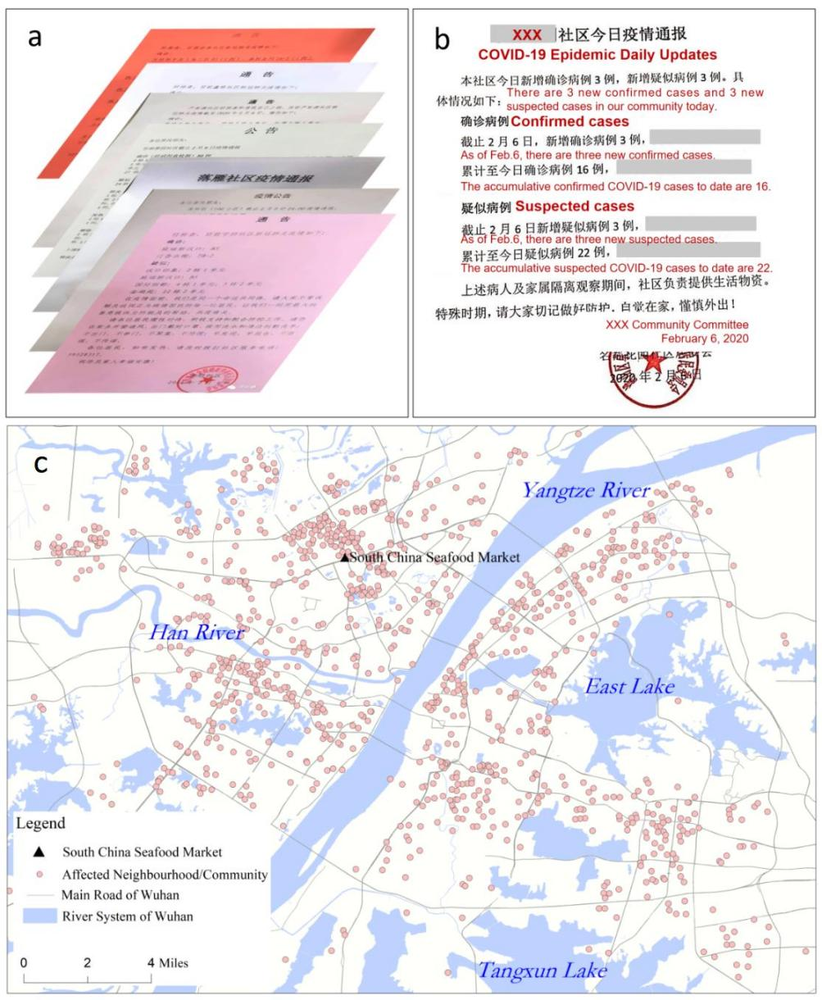
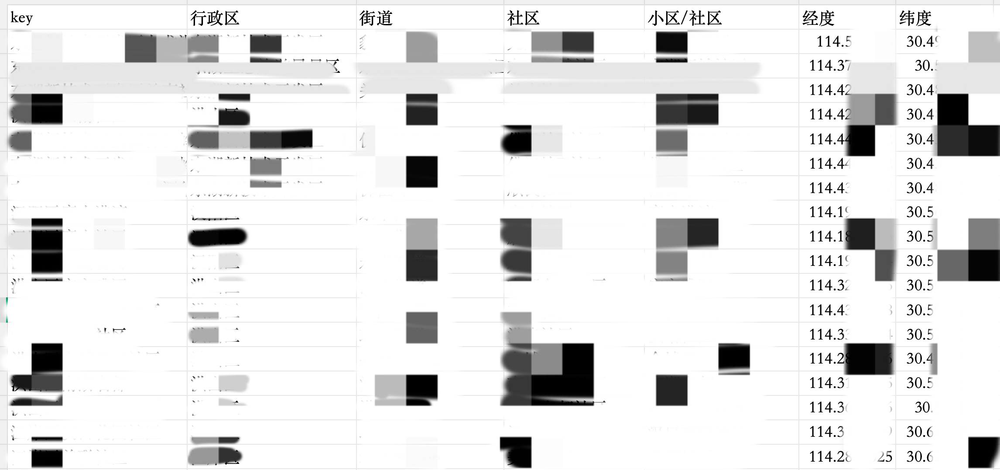
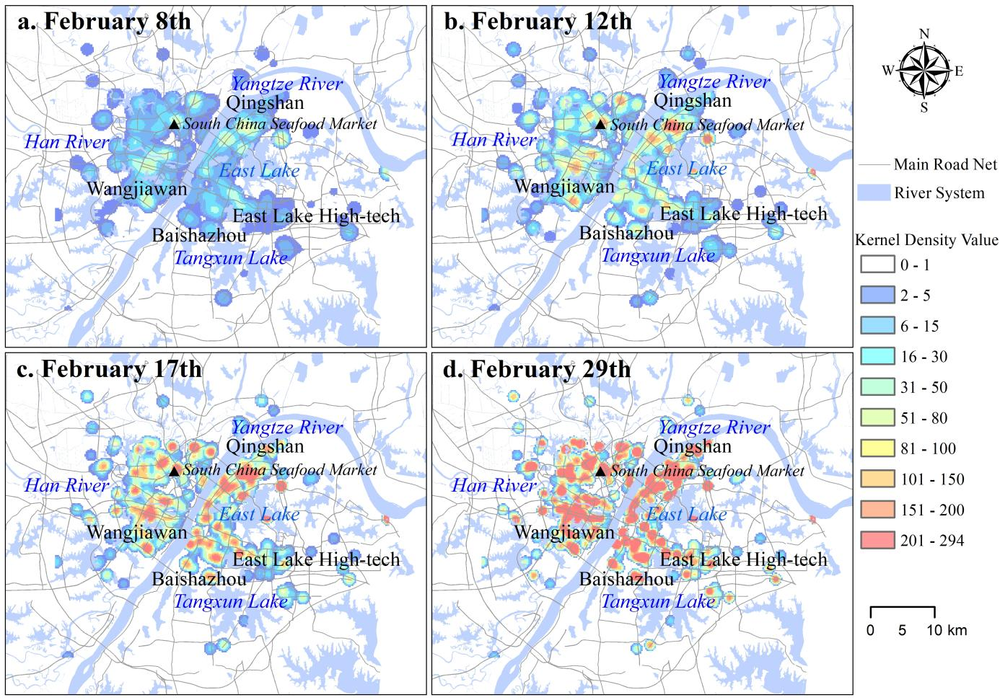

截至2020年5月18日，武汉市政府报告累计确诊新冠肺炎病例50340例（其中非居民223例），死亡3869例，全市病死率为7.7%（图1）。2020年2月16日，武汉市启动集中入户调查，以加强疫情防控，各区上报了调查的个人和家庭数量。团队成员通过微信公众号等途径获得了第一轮新冠疫情的社区通报数据。

随后调用高德地图API获取社区的经纬度进行地理编码，如下所示：

随后进行了一些核密度等空间分析(此处非本人负责)

最后使用SatScan检测武汉市第一轮新冠疫情的病例聚类，结果如图所示：
 返回主页
返回主页